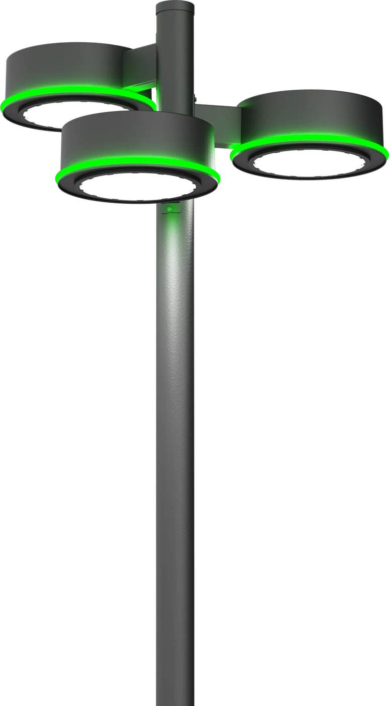
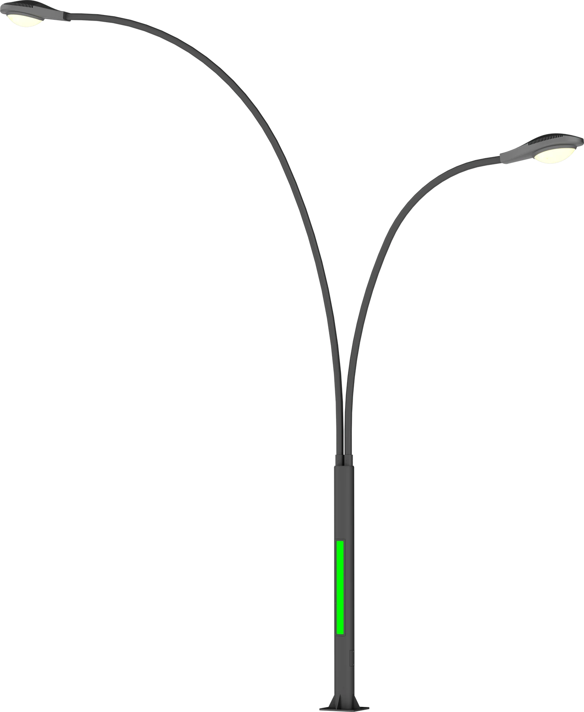
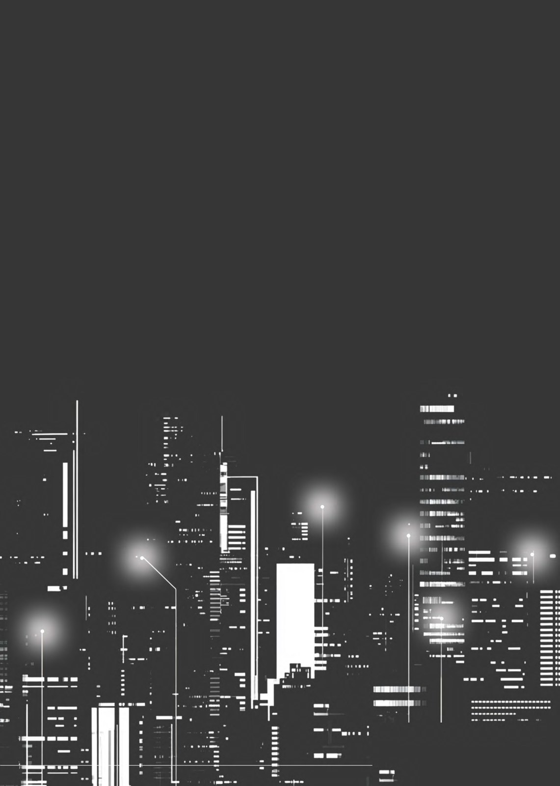

1
Harf harf yükselen başlık
Sayfa açılınca ana başlık harf harf aşağıdan yükselir. İlk izlenim için.Şehre ışık tasarlıyoruz
2
Işık süpüren yazı
Yazının üstünden sürekli bir ışık geçer. Slogan ya da kampanya başlığı için.2008'den beri Bursa'dan
3
Fareyi takip eden spot ışığı
Kartın üstünde gezdikçe fare bir el feneri gibi kartı aydınlatır. Hizmetler bölümü için.✦
Tasarım
Her projeye özel direk ve armatür çizimi.
⚙
Üretim
Kendi fabrikamızda, kendi ustalarımızla.
◎
Montaj
Sahada kurulum ve teslim sonrası destek.
4
Sallanan ışık huzmeleri
Yukarıdaki lambadan aşağı yumuşakça salınan ışık. Giriş bölümünün arka planı için.Karanlığa imza atın
Park, cadde ve meydanlar için aydınlatma
5
Mıknatıslı buton
Fare yaklaşınca buton fareye doğru çekilir. "Teklif al" gibi ana butonlar için.6
Yukarı sayan rakamlar
Bölüme gelince rakamlar sıfırdan sayarak dolar. Güven bölümü için.0
Kapalı üretim alanı
0
Belediye
0
İnşaat firması
0
Ülkeye ihracat
7
Eğilen ve parlayan ürün kartı
Kart fareye göre üç boyutlu eğilir, üstünde metal parıltısı gezer. Ürün vitrini için.
Seri 01Modern Direkler

Seri 02Meydan Serisi

Seri 03Bollardlar
8
Kaydırdıkça yanan cümle
Aşağı indikçe kelimeler sırayla aydınlanır, sanki ışık yazının üstünden geçiyor. Hakkımızda bölümü için.Biz direk satmıyoruz. Bir parkta akşam yürüyüşünü, bir meydanda geç saatte buluşmayı, bir caddede güvenle eve dönmeyi tasarlıyoruz. Her ürünü kendi fabrikamızda üretiyor ve şehrinize ışık taşıyoruz.
9
Tıklayınca kıvılcım
Nereye tıklarsan oradan küçük ışık kıvılcımları saçılır. Sayfanın tamamına eklenebilir.Buraya tıklaBirkaç kez dene
10
Açılıp aydınlanan şerit
Fareyle üstüne gelinen fotoğraf genişler ve ışığı yanar, diğerleri karanlıkta kalır. Referans projeler için.Meydan projesi

Cadde aydınlatması
Şehir merkeziPark yoluYaşam alanı